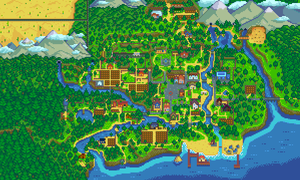
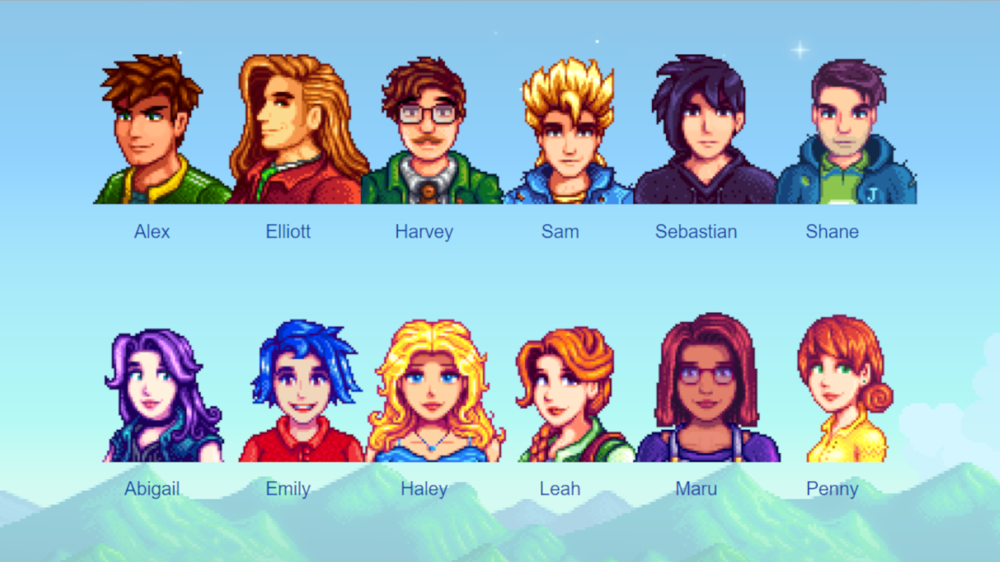
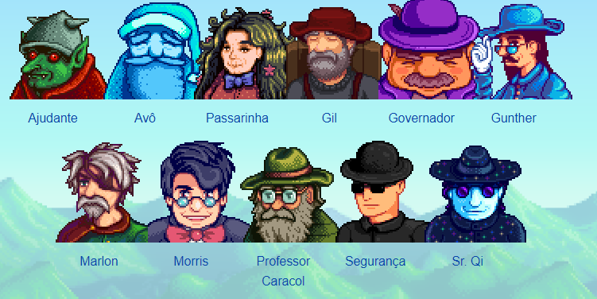

Stardew Valley
Um jogo de rpg de fazenda!
Sobre o jogo
Stardew Valley é um videogame RPG de simulação desenvolvido por Eric "ConcernedApe" Barone. Os jogadores assumem o papel de um personagem que herda a fazenda dilapidada de seu falecido avô em um lugar conhecido como Stardew Valley. O jogo foi lançado para Windows em fevereiro de 2016 antes de ser portado para outras plataformas. Stardew Valley é aberto, permitindo aos jogadores cultivar, criar gado, pescar, cozinhar, minerar, forragear e socializar com os habitantes da cidade, incluindo a capacidade de casar e ter filhos. Ele permite que até quatro jogadores joguem online juntos
Os jogadores interagem com personagens não-jogadores (NPCs) que habitam a cidade, incluindo relacionamentos com eles; isso pode culminar em casamento, o que resulta no NPC ajudando o personagem do jogador a cuidar da fazenda. Após o casamento, os jogadores podem ter a oportunidade de ter ou adotar um filho com o cônjuge. Os jogadores também podem pescar, cozinhar, criar e explorar cavernas geradas processualmente com materiais e minérios para extrair ou criaturas para combater. Os jogadores podem realizar várias missões para ganhar dinheiro adicional ou completar coleções específicas de materiais (chamadas de "pacotes") para restaurar o Centro Comunitário da cidade ou pagar certas quantias de dinheiro para completar os pacotes do JojaMart. Todas essas atividades devem ser avaliadas em relação ao nível atual de saúde e exaustão do personagem e ao relógio interno do jogo. O jogador pode consumir alimentos que concedem certos buffs que são úteis em determinadas atividades e situações. A comida também é fonte de reposição de saúde e energia, o que permite ao jogador realizar mais tarefas em um determinado dia. O jogo utiliza um calendário simplificado, cada ano com quatro meses de 28 dias que representam cada estação, que determina quais culturas podem ser cultivadas e quais atividades podem ser benéficas. Mais tarde no jogo, os jogadores podem restaurar uma estufa e uma ilha que pode cultivar qualquer cultura, independentemente da estação.
O jogo se passa na Vila Pelicanos, onde a maioria dos moradores vive, trabalha e socializa. Lewis é o prefeito da Vila Pelicanos e tem sido por muitos anos; Ele comenta que ele não teve concorrência para o papel desde que se tornou prefeito. A entrada noroeste da cidade liga-se ao Ponto de Ônibus e à Fazenda. A passagem do sudoeste conecta-se à Floresta Cinzaseiva, que contem o Rancho da Marnie, a Cabana da Leah, e a Torre do mago. Diretamente ao sul da cidade é A Praia. O norte da cidade conecta-se A Montanha, com a Carpintaria da Robin, As Minas, a Guilda dos Aventureiros, a Ferrovia, e a Pedreira.
O jogo possui quatro opções de fazendas, sendo elas a Fazenda Padrão, Fazenda Entre Riachos, Fazenda na Floresta, Fazenda na Colina, Fazenda Remota, Fazenda Quatro Cantos (ideal para o multiplayer), Fazenda na Praia e Fazenda do Prado
Durante as estações tem os festivais, sendo eles o Festival do Ovo, Dança das flores na primavera, Lual e a Dança das Medusas-da-Lua no verão, a Feira do Vale do Orvalho e a Véspera dos Espíritos no outono e o Festival do Gelo, Mercado Noturno e o Festival da Estrela Invernal no Inverno.
Personagens
O jogo conta com 12 ncps casáveis, 6 homens e 6 mulheres, sendo eles: Alex, Elliot, Harvey, Sam, Sebastian e Shane de homens e Abigail, Emily, Haley, Leah, Maru e Penny de mulheres.
Durante o jogo você pode estabelecer uma relação de amizade com os Ncps, podendo dar presentes amados/odiados/nuetros, de acordo com o gosto deles.
Os personagens não casáveis são o Anão, Caroline, Clint, Demetrius, Evellyn, Feiticeiro, George, Gus, Jas, Jodi, Kent, Krobus, Leo, Lewis, Linus, Marnie, Pam, Pierre, Robin, Sandy, Vincent e Willy.

Já os personagens não casáveis e não presenteáveis são o Ajudante, Avô, Passarinha, Gil, Governador, Gunther, Marlon, Morris, Professor Caracol, Segurança e o Sr. Qi.
Curiosidades:
Mais informações do jogo
O jogo está disponível na Steam, AppleStore, GooglePlay, Nintendo Swich, PS4 e Xbox One.
Site oficial do criador do jogo ConcernedApe